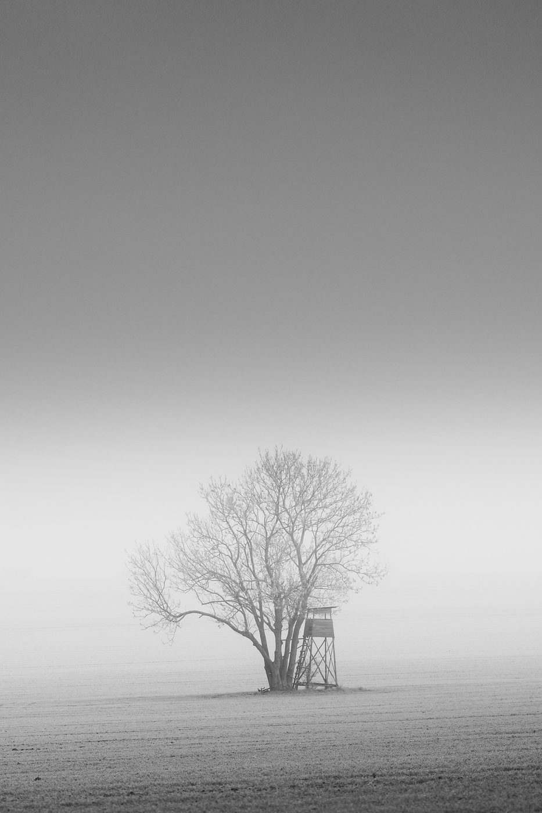

O mně
Fotografuji krajinu tak, jak ji vnímám. Nejen to, co je vidět.
Nejraději ve chvílích, kdy ztichne: za svítání, v mlze, v mrazu a po setmění.
Hledám v ní jednoduchost. Osamělý strom v poli, posed na obzoru, světlo mezi kmeny.

Fotografuji krajinu tak, jak ji vnímám. Nejen to, co je vidět.
Nejraději ve chvílích, kdy ztichne: za svítání, v mlze, v mrazu a po setmění.
Hledám v ní jednoduchost. Osamělý strom v poli, posed na obzoru, světlo mezi kmeny.
